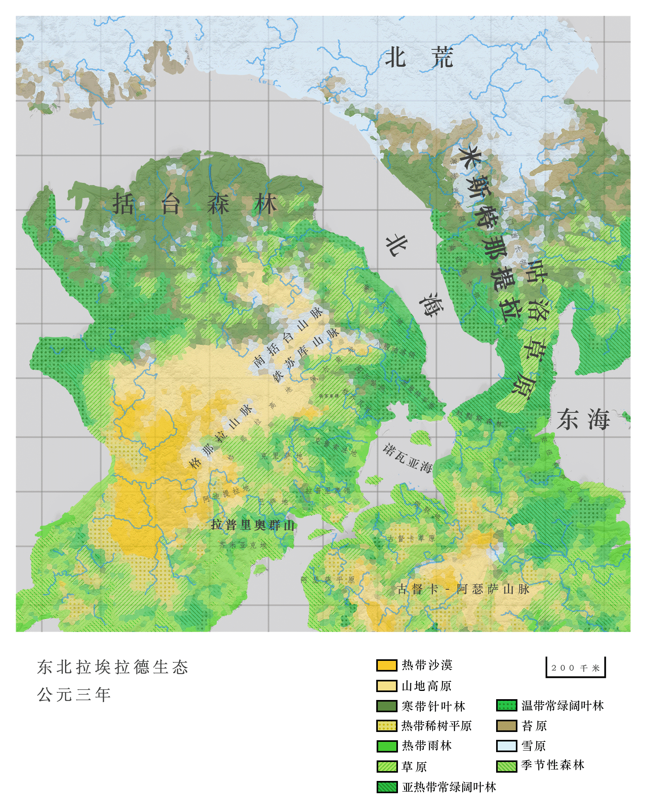

咕洛诸部¶
概念与词源¶
咕洛这一称呼，在咕洛语中本意是“河边”。 * 对外称呼的由来： 最初，图斯克人将这个词用来称呼他们最早接触的、名为“Glömer”的这一支氏族。这个名称作为蛮族的称呼在图斯克语中固定下来，成为了图斯克北地民族的统称。 * 自我认同的演变： 随着几百年咕洛人与图斯克人的交往，尤其是原本的“Glömer”支系逐渐被同化和消亡后，咕洛族人也逐渐接受了这一称呼。
语言差异¶
咕洛一词在咕洛语中含有与 o 对立的前元音 ö，而图斯克语中并无此音，因而在图斯克语中常写作 gulomer。二者之间的音变成因难以确证，或许在双方最初接触之时便已因认知差异而产生。
地理¶
作为图斯克帝国东北角的重要组成部分，咕洛族的领地集中在北海与东海之间的狭长走廊。
地形与气候¶
咕洛国地形复杂多样，以连绵起伏的山地为主，构成了独特的地理骨架。
- 北部山脉： 巍峨的山脉高耸入云，常年积雪。它们不仅是重要的水源涵养地，也是一道天然屏障，阻挡了来自北方的寒流，使得山脉以南的区域气候相对温和（主要为温带）。
- 河谷地带： 由于山地众多，平坦土地稀少，河流蜿蜒穿梭于群山之间，滋养了两岸的土地。广阔的河谷是畜牧业的基础，也是人口聚居和农耕的主要区域，被视为国家经济的命脉。
- 西部荒漠： 呈现出截然不同的景象。广袤的荒漠地带气候干燥，降水稀少，地表多为沙丘、戈壁和盐碱地，但可能蕴藏着未知的矿产资源。

生态与生物¶
- 植被： 以广阔的草原为主（从河谷草原到高山草甸），覆盖了大部分非山地和非荒漠区域。在海拔较高或纬度偏北的区域，分布着耐寒的苔原植被（苔藓、地衣、矮灌木）。
- 动物：
- 家畜： 以牛、羊、马为主。马匹用于交通与军事，牛羊则是食物与经济基石。
- 野生动物： 狼群是主要的捕食者；鹰是天空的霸主；狐狸与野犬广泛分布于各类环境中。
历史¶
起源与传说¶
咕洛族最根本的起源已不可考，因其游牧特性缺乏历史记录。根据咕洛传说，咕洛族人是女神拉姆若（Ramro）以自己的血肉所化，在神山卡咯达的庇佑下躲过了大灾变时期。
统一：萨劼皮奥马克 顾卓八顾¶
咕洛族的首个“大一统”王朝被称为莫斯瓦里克王朝（马族王朝）。
- 崛起： 始祖顾卓八顾原是草原斗争失败沦为奴隶的幸存者。他利用迷信或灵力，在寒冬中团结了各部族的奴隶。
- 夺权： 他在一次大部族集会上杀死了醉酒的长老们，高呼“以拉卓达之名！”，并许诺跟随者牛羊。他整合了奴隶阶层，收服了主要部族，自称萨劼皮奥马克（天下大长老）。
- 统治： 此时的统一更多是名义上的，实际权力仍受制于大长老会。但他成功建立了咕洛人的民族自觉，整合了部分军队，并提拔奴隶阶层。
继承危机与南逃¶
顾卓八顾死后无嗣，其弟欧顾卓特洛继位。欧顾卓特洛死后，大长老会拒绝支持其子欧顾卓特洛诺，转而推举旁系。欧顾卓特洛诺反抗失败，被迫南逃[[图斯克]]。
莫斯瓦里克王朝的复辟与崛起¶
南逃图斯克期间，欧顾卓特洛诺借助图斯克边境领主的兵力和先进装备，反攻咕洛，击败大长老会。
- 改革： 受到图斯克政治制度启发，他确立了莫斯瓦里克家族的神圣性和法理统治，削弱了大长老会的权力，将其转变为议事机构。
- 魔法复兴： 他设立了皎忽匝依（祭司）制度。由于正值“快照”距离原点较远时期，魔法效果显著，咕洛族建立了成熟的“灵语”体系。
- 反超图斯克： 彼时图斯克正陷入黑蔑特王朝与诺瓦亚王朝的战乱，典籍损毁。咕洛族的灵语水平反超南方，为日后建立图斯克帝国的咕洛王朝埋下了伏笔。
政治与社会体制¶
基础结构¶
咕洛族政治单位以地理和血缘划分为主，因游牧特性而松散，很难形成稳定的政治结构。
- 氏族： 基础政治单位（如山地氏族、河流氏族）。
- 家族： 社会基本单位，施行家长制，共同拥有牲畜与帐篷。
- 长老会： 每个氏族的领导机构。氏族间设有大长老会。
头衔演变¶
- 长老： 原指氏族领袖，后指代贵族。
- 萨劼皮奥马克（世界长老）： 咕洛族最高统治者称号，加入图斯克帝国后用来称呼皇帝。
- 居皮奥马克（太阳长老）： 帝国时期对咕洛王的称呼。
宗教与灵语者¶
咕洛族没有严密的宗教体系，信仰通过灵语者存续。 * 通晓灵语的人被称为灵语者，形成松散的贵族阶层。 * 他们拥有预言、治疗和沟通灵魂的能力，知识口耳相传，无书面记载。
经济¶
- 游牧为主： 依靠放牧牦牛、山羊等牲畜为生，产出毛皮、帐篷、衣物及生活必需品。
- 少量农业： 在近河地区有少量耕地，主要种植寒带可食用稻谷作物。
文化¶
- 部落文化： 结合了祖先崇拜和原始宗教信仰。
- 语言： 咕洛族历史上无严格官方语言，分为沿海方言和内陆方言。如今记录在案的咕洛语以南部的沿海方言为准。
参见¶
| 分类 | 词条 |
|---|---|
| 咕洛 | 咕洛传说 |
| 地理 | [[图斯克]]、黑蔑特、米斯特那提拉 |